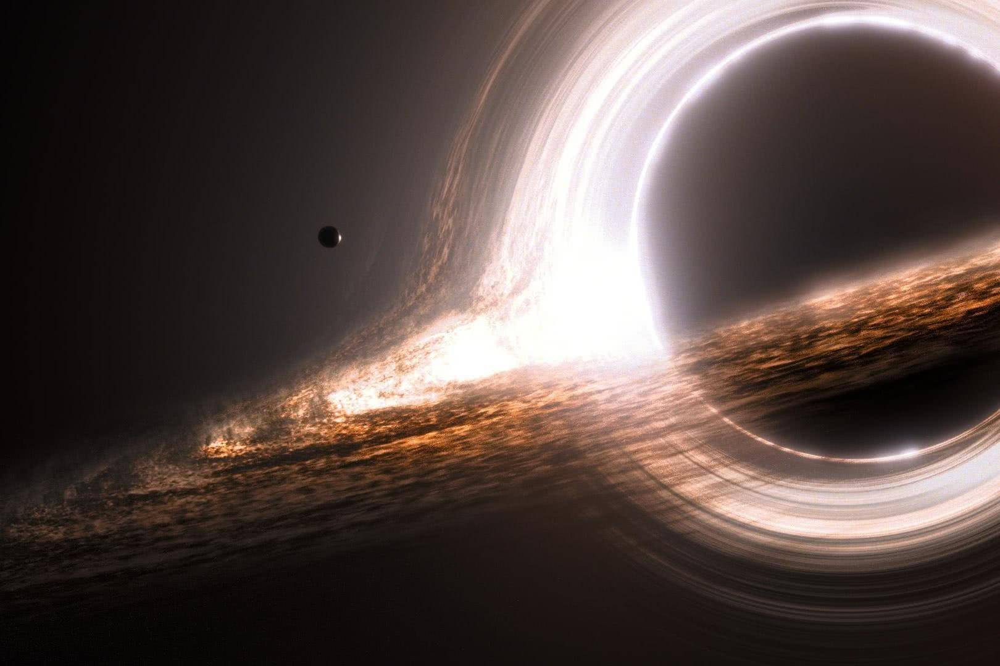

深入神秘黑洞
黑洞是宇宙中最神秘的天体之一。它的引力极其强大，以至于连光都无法逃脱它的束缚。在这个页面中，我们将探索黑洞的奥秘。

一、什么是黑洞？
黑洞是由大质量恒星在燃料耗尽后坍缩形成的。当一颗恒星的质量足够大时，它内部的压力无法抵抗自身的引力，最终会塌缩成一个密度无限大、体积无限小的奇点。在奇点周围，存在一个被称为“事件视界”的边界，任何进入这个边界的物质都无法返回。
二、人类如何观测黑洞？
因为黑洞本身不发光，我们无法直接看到它。但是，当黑洞吞噬周围的物质时，这些物质会形成一个高速旋转的吸积盘，并发出强烈的X射线和可见光。2019年，人类首次通过“事件视界望远镜”（EHT）拍摄到了黑洞的照片，这标志着天文学的一大飞跃。
三、著名的黑洞
人马座A*： 位于银河系中心，距离地球约2.6万光年。
M87*： 位于室女座A星系中心，是人类拍下的第一张黑洞照片的主角。